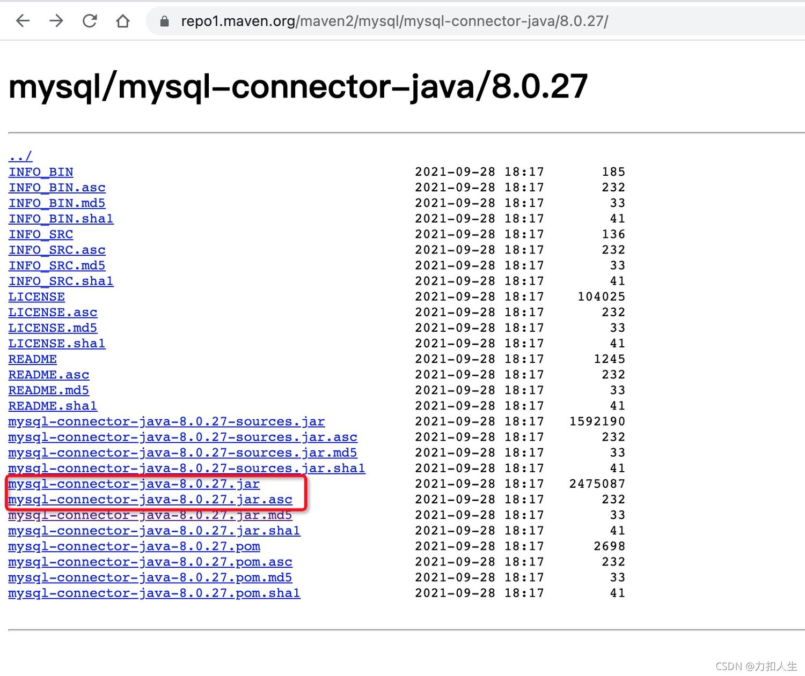
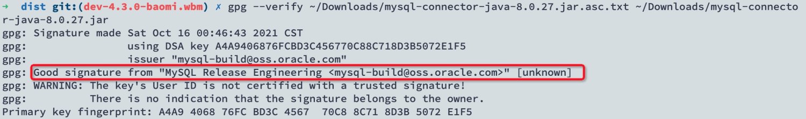
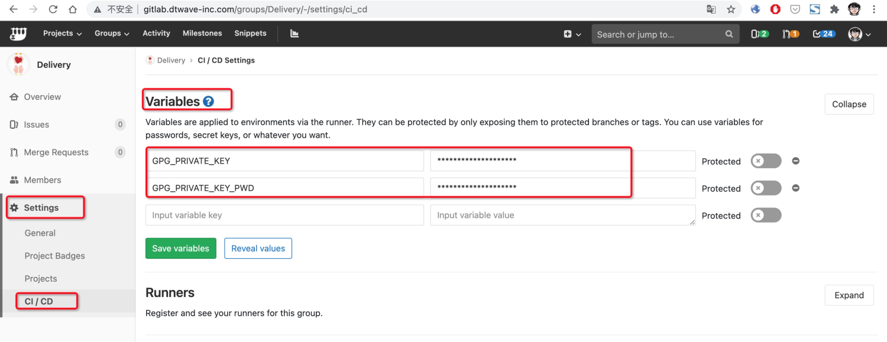

需求背景

你有没有发现，从Maven仓库下载文件的时候，除了我们需要的jar包之外，还有个.asc文件，这个文件就是jar包的数字签名，咱可以通过这个数字签名来验证jar包是否确实是Oracle官方发布的包：

对于我们的客户，生产环境上运行的程序，有些是从公司 gitlab-ci 上编译出来的，有些是开发者个人电脑上编译出来的，还有的是客户自己改代码后编译出来的，程序出问题后，到底是谁的责任呢？比如，executor-proxy-provider.jar 可以直接接触到客户生产环境的数据，万一这个文件被人恶意篡改，把客户数据删掉了，咋整…
所以，咱也需要将公司对外的jar包做个签名，客户拿到jar包后，可以根据签名文件来确认是不是官方的包。
GPG签名原理
参考下这个链接：https://www.ruanyifeng.com/blog/2013/07/gpg.html
大体流程是：
- 使用GPG生成一对密钥，公钥和私钥
- 使用私钥对文件进行签名，并生成签名文件
- 将文件、该文件对应的签名文件 以及 公钥，同时对外公布
- 用户使用公钥和签名文件，对该文件进行签名验证
Maven使用GPG签名
参考下官方链接：https://maven.apache.org/plugins/maven-gpg-plugin/usage.html
大体流程是：
公司内部统一生成一对公钥和私钥文件：
public.gpg和private.gpg；私钥private.gpg将用于对发布包进行签名，所以必须由专人保管且只有公司统一的专用服务器可以使用（如gitlab-ci使用的容器），私人电脑不得使用该私钥对发布包进行签名；公钥public.gpg将用于客户验证发布包的签名，需要与公钥本身的指纹(可通过gpg --fingerprint生成)一同公开在公司官网；在公司统一的专用打包服务器上通过
gpg --import private.gpg来导入私钥；在项目pom中添加
maven-gpg-plugin插件1
2
3
4
5
6
7
8
9
10
11
12
13
14
15
16
17
18
19
20
21
22<project>
...
<build>
<plugins>
<plugin>
<groupId>org.apache.maven.plugins</groupId>
<artifactId>maven-gpg-plugin</artifactId>
<version>3.0.1</version>
<executions>
<execution>
<id>sign-artifacts</id>
<phase>verify</phase>
<goals>
<goal>sign</goal>
</goals>
</execution>
</executions>
</plugin>
</plugins>
</build>
...
</project>在项目assembly中将
maven-gpg-plugin插件生成的签名文件(.asc)包含进来1
2
3
4
5
6
7
8
9
10
11
12<fileSets>
...
<fileSet>
<directory>${project.parent.basedir}/dubhe-server-provider/target</directory>
<outputDirectory>${assembly.name}/jars</outputDirectory>
<includes>
<include>*.jar</include>
<include>*.jar.asc</include>
</includes>
</fileSet>
...
</fileSets>使用
mvn verify进行打包，此时jar包对应的签名文件(.asc)会自动生成，与jar包在同一级目录下客户(或者交付运维人员)在拿到部署包后，可通过以下步骤对jar包进行签名验证：
7.1 从官网下载公钥文件public.gpg
7.2 通过gpg --import public.gpg导入公钥
7.3 通过gpg --fingerprint公钥ID 查看公钥指纹，确保该指纹与官网公布的公钥指纹一致
7.4.通过gpg --verify dubhe-server-provider-4.3.1.jar.sig dubhe-server-provider-4.3.1.jar来验证该文件签名是否是Good signature开发测试平时打包，可按原先流程通过
mvn package打包发布测试环境，不会进行签名，当然，这种包也不能对外发布。
gitlab-ci 配置
gitlab上的ci使用了k8s来做runner，目前公司内部通用的ci脚本一般是拉代码-打包-推送这个过程，我们需要在打包过程中加入GPG签名步骤，ci需要改动的点如下：
1 | image: docker:git |
改动点1:
Build时使用maven:3.5.4-jdk-8-gunpg-alpine镜像maven:3.5.4-jdk-8-gunpg-alpine 镜像比原先的 maven:3.5.4-jdk-8-alpine镜像多安装了一个gunpg，用于GPG签名。
改动点2:
Build时先通过gpg加载私钥gpg -v --batch --import <(echo "$GPG_PRIVATE_KEY")
GPG私钥是保存在gitlab的环境变量GPG_PRIVATE_KEY中的，该变量只允许gitlab项目管理员或者分组管理员编辑。
改动点3:
使用mvn verify来打包mvn clean verify -U -DskipTests -Dgpg.passphrase=$GPG_PRIVATE_KEY_PWD -DSHUXI_VERSION=$CI_COMMIT_TAG
原先使用mvn install ...改为mvn verify ...，同时传入变量gpg.passphrase=$GPG_PRIVATE_KEY_PWD，用于指定使用GPG私钥的密码，该密码是存放在gitlab的环境变量GPG_PRIVATE_KEY_PWD 中的，只允许gitlab项目管理员或者分组管理员编辑。
gitlab管理员配置
在项目配置或者分组配置下，设置变量：

GPG_PRIVATE_KEY 为GPG私钥，默认情况下，GPG私钥是以二进制方式存储的，可通过gpg --armor --output private-key.txt --export-secret-keys来生成ASCII码文本，然后将私钥文本填入该变量的值中。私钥务必保证其安全性，只有管理员可见。
GPG_PRIVATE_KEY_PWD为使用GPG私钥的密码，在生成GPG密钥对的时候设置的此密码，需将密码填入该变量中。为防止私钥被滥用，该密码也需保证安全性，只有管理员可见。